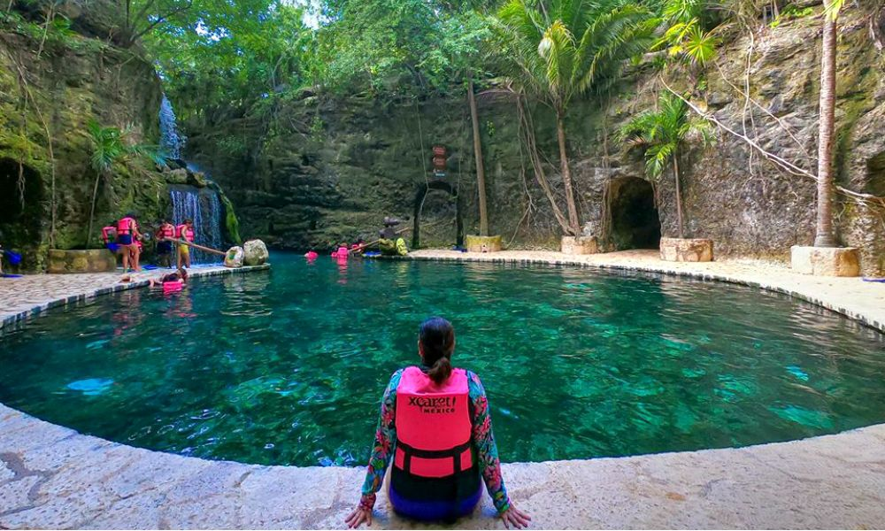
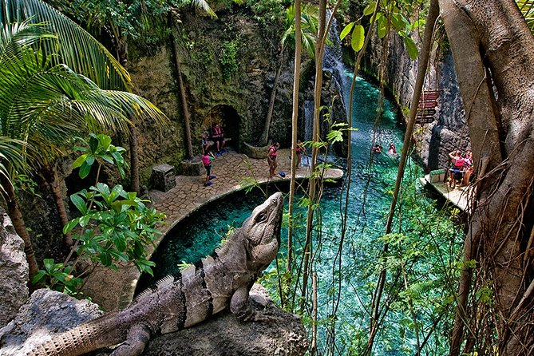

RIVERA MAYA
Xcaret (pronunciado [ʃkaˈɾet], /shkarét/), antiguamente Polé, fue una importante ciudad comercial de la cultura maya antes de la llegada de los conquistadores españoles en el siglo XVI.
Actualmente es un parque temático ecológico situado en la Riviera Maya, a 5 km al sur de Playa del Carmen y a 75 km al sur de Cancún, en el estado de Quintana Roo, México. Para la civilización maya este sitio fue un importante puerto y centro mercantil y en el cual aún pueden apreciarse vestigios arqueológicos.

